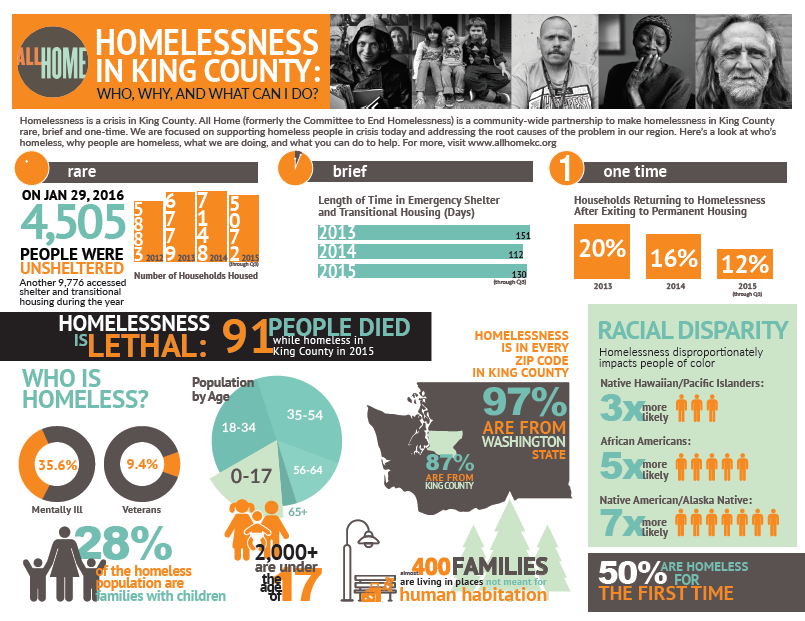
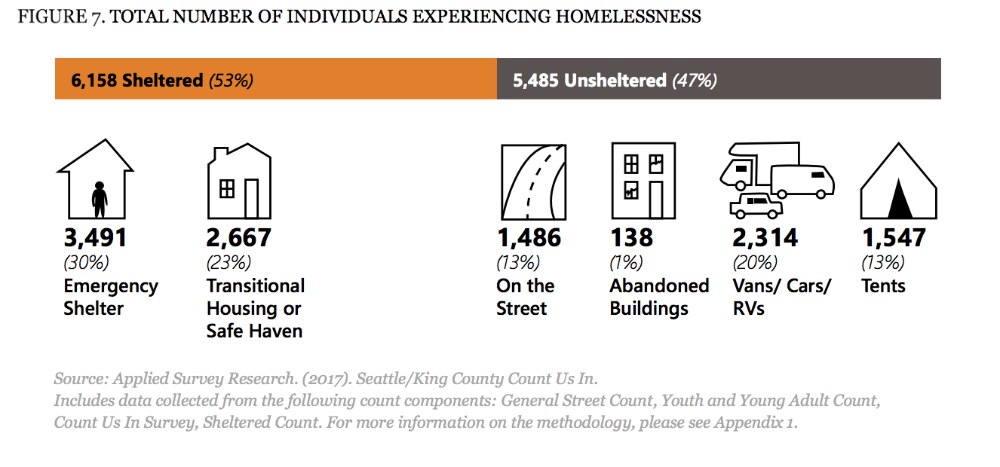
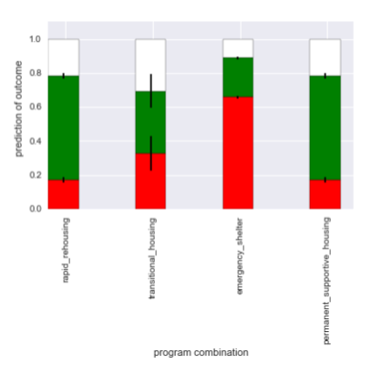
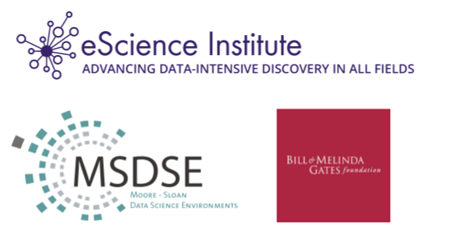

Working in the intersection of data science and computational demography
UW Center for Studies in Demography and Ecology Computational Demography Lunch, November 21st, 2017
Follow along at:

About me
Trained as a neuroscientist
MRI imaging
Open source software
Data Science

Software
Education
Careers
Spaces
Data Science Studies
Reproducibility and Open Science
Data Science for Social Good
Inspired by DSSG program at U Chicago, GA Tech
10-week internship program
16 DSSG fellows/students
4 projects (+project leads!)
+ Data scientist mentors
Predictors of Permanent Housing for Homeless Families
DSSG Fellows: Joan Wang, Jason Portenoy, Fabliha Ibnat, Chris Suberlak
ALVA Students: Cameron Holt, Xilalit Sanchez
eScience Data Scientist Mentors: Ariel Rokem, Bryna Hazelton
Seattle's homelessness crisis
Seattle's homelessness crisis
Predicting outcomes
Communicating uncertainty
Open source software for science
The Python programming language:
Relatively easy to learn
Free and open source
"Batteries included"
The scientific Python ecosystem

The scientific Python ecosystem

The scientific Python ecosystem

The scientific Python ecosystem

Incentives for academic software development

The developer-friendly software journal
Focus on review of the software
Clear publication criteria
Open review on Github
Broadening the context
Modeling other factors that affect individuals and families
Public Housing
The role of educational opportunities
Challenges of working with these data
Individually identifying
Sensitive
Need to be mindful of algorithmic bias
Weapons of Math Destruction
Opaque
Work at scale
Damaging: perpetuate bias that negatively affects individuals
One technical solution: privacy-preserving data synthesis
https://github.com/DataResponsibly/DataSynthesizerPreserves certain aspects of the data
While hiding other aspects (e.g., individual information)
Thanks!
